verify-main-merge.mjs デバイス: PC(1280x800) / iPad Pro 11 / iPhone 14 赤枠は検証対象箇所。astro.config.mjs の SITE_URL → https://reiwa.casapublic/admin/config.yml → branch: main / base_url: https://reiwa.casa（競合なく解決）public/robots.txt → Allow: / + Sitemap: https://reiwa.casa/sitemap-index.xml（Bug #45 是正）| 対象 | ID | 検証項目 | 結果 |
|---|---|---|---|
| Source | M01 | astro.config.mjs の SITE_URL が main 値 | PASS |
| Source | M02 | config.yml の branch が main | PASS |
| Source | M03 | config.yml の base_url が https://reiwa.casa | PASS |
| Source | M04 | robots.txt が main 用（Allow + Sitemap、Bug #45） | PASS |
| Source | M05 | 生成物にstaging URLが混入していない（canonical/OGP/RSS/sitemap） | PASS |
| Source | F-1 | MWGレビュー指摘の維持: content-visibility はファーストビュー外のみ（nth-child(n+7)） | PASS |
| Source | F-2 | MWGレビュー指摘の維持: ナビのEscape/フォーカス離脱クローズ | PASS |
| Source | F-3 | MWGレビュー指摘の維持: タッチ端末44pxタップ領域 | PASS |
| Source | F-4 | MWGレビュー指摘の維持: CMS月セレクターのaria-label | PASS |
| Source | F-5 | MWGレビュー指摘の維持: CMS月セレクター44px | PASS |
| Source | F-6 | MWGレビュー指摘の維持: 管理画面のlang="ja" | PASS |
| Source | F-7 | MWGレビュー指摘の維持: nav aria-labelにロール名を含めない | PASS |
| Source | F-8 | MWGレビュー指摘の維持: 本文リンクの下線・識別色（記事/固定ページ） | PASS |
| Source | F-9 | MWGレビュー指摘の維持: コードブロックのtabindex付与プラグイン | PASS |
| Source | F-10 | MWGレビュー指摘の維持: サムネイルのwidth/height属性 | PASS |
| PC | S01 | トップページ（ライト）: LCP属性・ファーストビュー内content-visibilityなし | PASS |
| PC | S02 | ダークモード配色が適用される（NFR-08） | PASS |
| PC | S03 | 記事詳細: canonical・OGP・前後記事ナビ | PASS |
| PC | S04 | タグ一覧ページ（FR-26） | PASS |
| PC | S05 | ナビ実操作: 開閉・aria-expanded・Escape・タップ領域 | PASS |
| PC | S06 | axe-core違反（トップ/タグ一覧） | PASS |
| PC | S99 | コンソールエラー | PASS |
| iPad | S01 | トップページ（ライト）: LCP属性・ファーストビュー内content-visibilityなし | PASS |
| iPad | S02 | ダークモード配色が適用される（NFR-08） | PASS |
| iPad | S03 | 記事詳細: canonical・OGP・前後記事ナビ | PASS |
| iPad | S04 | タグ一覧ページ（FR-26） | PASS |
| iPad | S05 | ナビ実操作: 開閉・aria-expanded・Escape・タップ領域 | PASS |
| iPad | S06 | axe-core違反（トップ/タグ一覧） | PASS |
| iPad | S99 | コンソールエラー | PASS |
| iPhone | S01 | トップページ（ライト）: LCP属性・ファーストビュー内content-visibilityなし | PASS |
| iPhone | S02 | ダークモード配色が適用される（NFR-08） | PASS |
| iPhone | S03 | 記事詳細: canonical・OGP・前後記事ナビ | PASS |
| iPhone | S04 | タグ一覧ページ（FR-26） | PASS |
| iPhone | S05 | ナビ実操作: 開閉・aria-expanded・Escape・タップ領域 | PASS |
| iPhone | S06 | axe-core違反（トップ/タグ一覧） | PASS |
| iPhone | S99 | コンソールエラー | PASS |
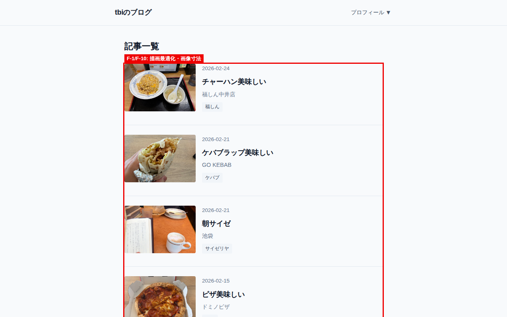
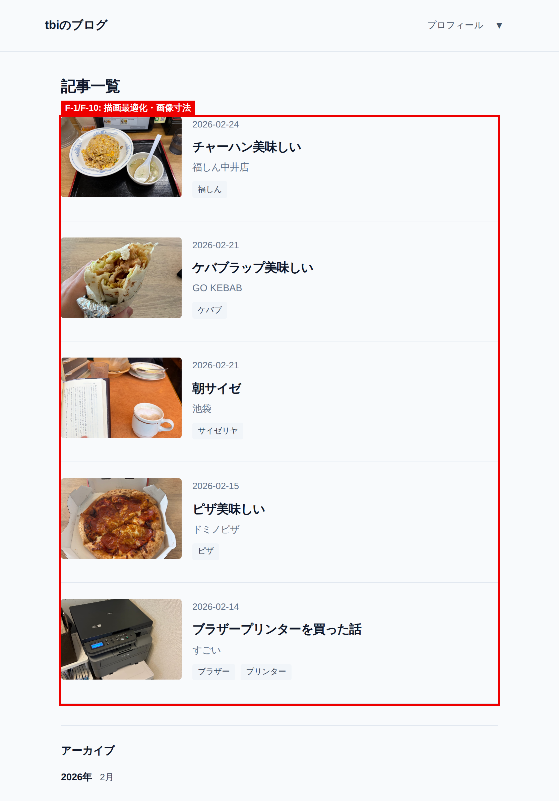
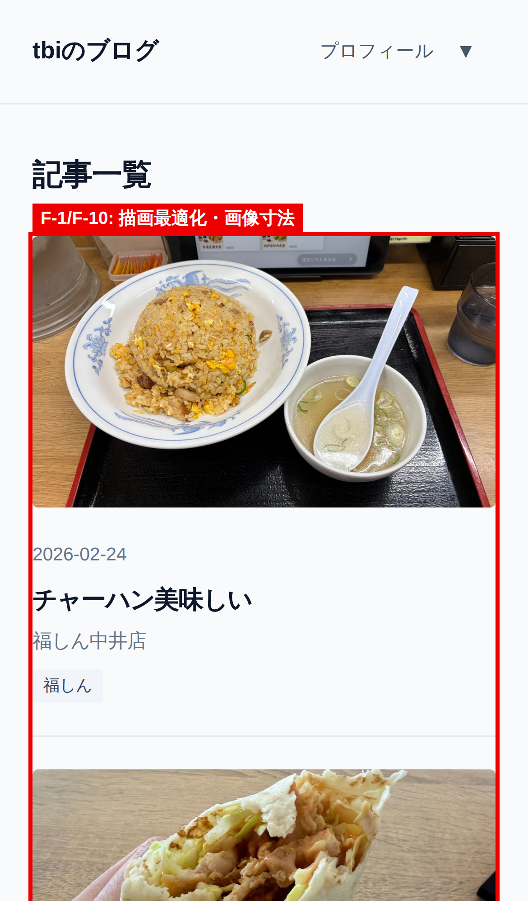
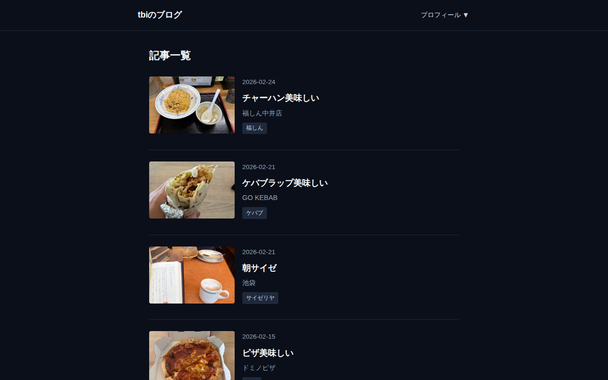
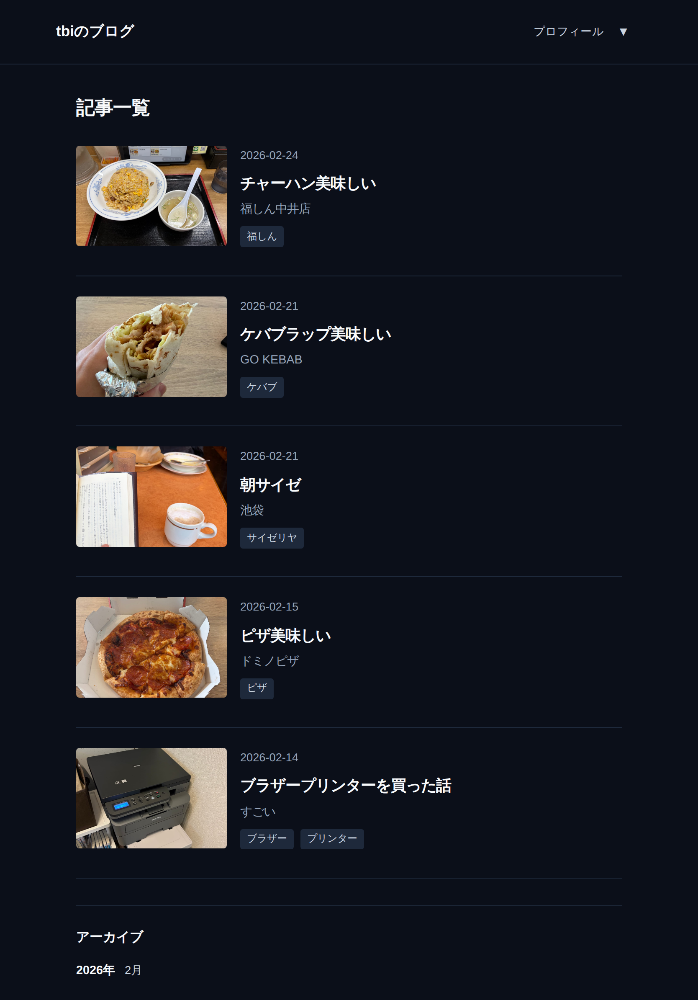
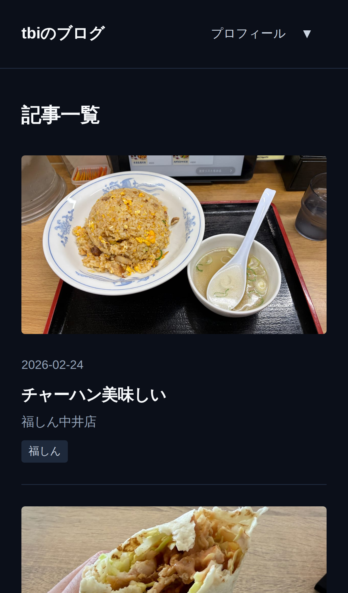
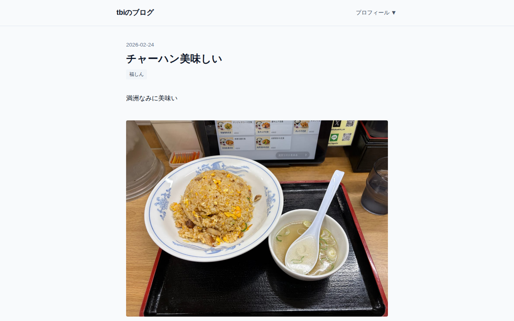
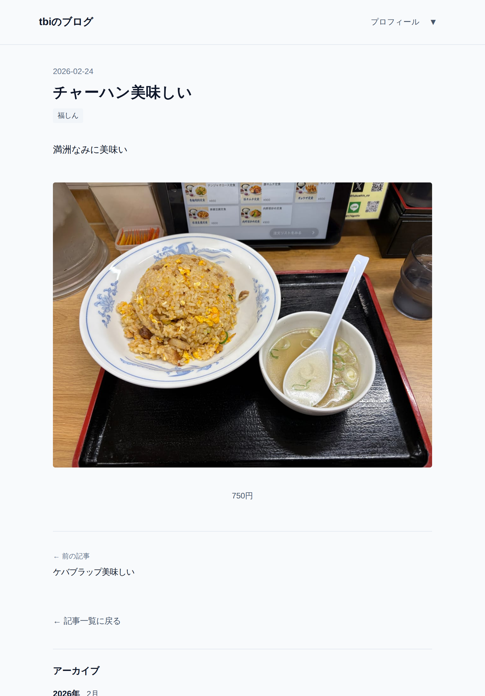
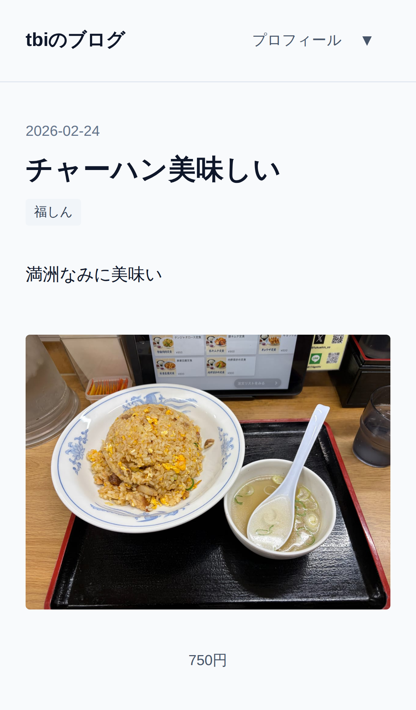
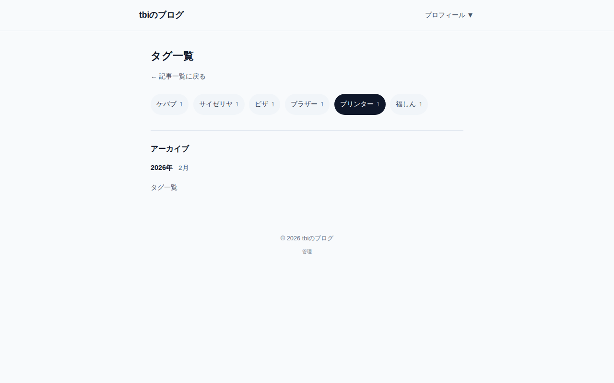
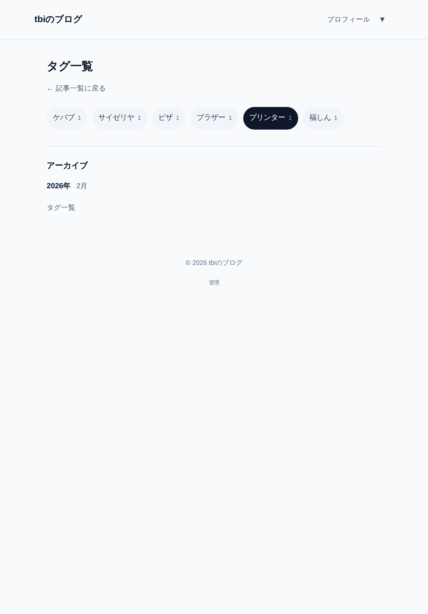
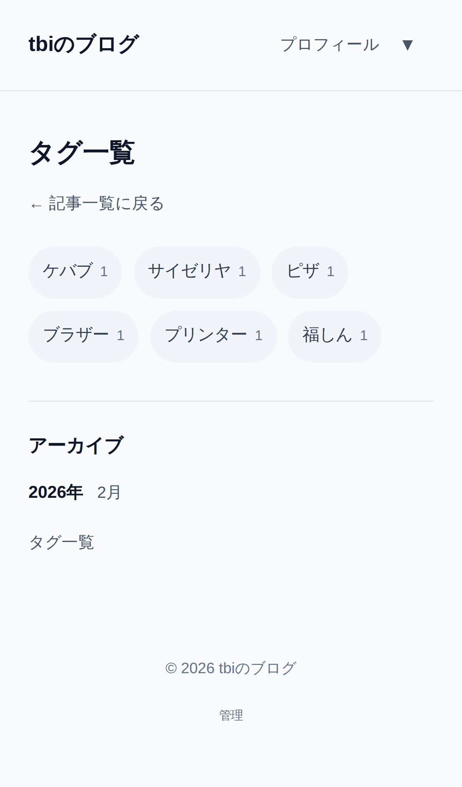
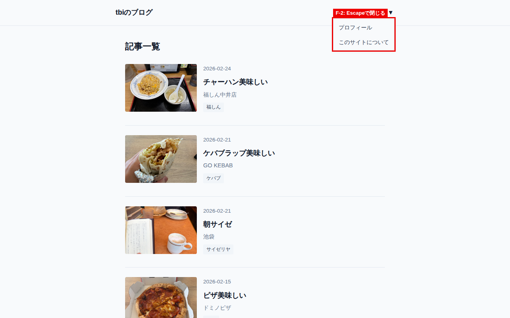
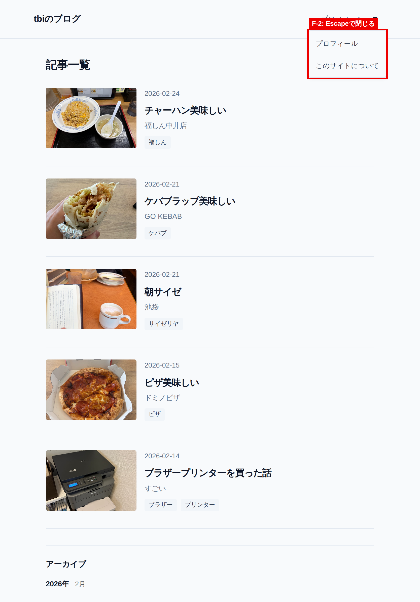
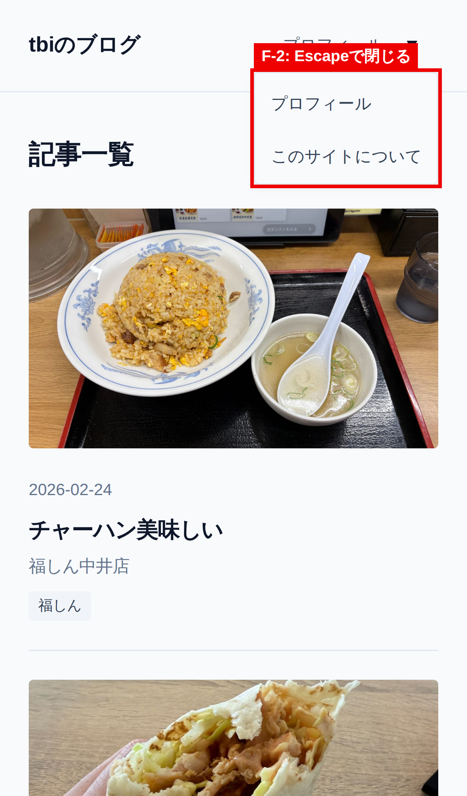
注記: CMS管理画面のE2E検証は Decap CMS 本体CDN（unpkg.com）への到達が必要だが、本セッションの実行環境では組織のegressポリシーにより unpkg.com・reiwa.casa とも遮断されているため未実施。Vitest 586件・CI（test-and-build）・Cloudflare Pages デプロイはいずれも success。